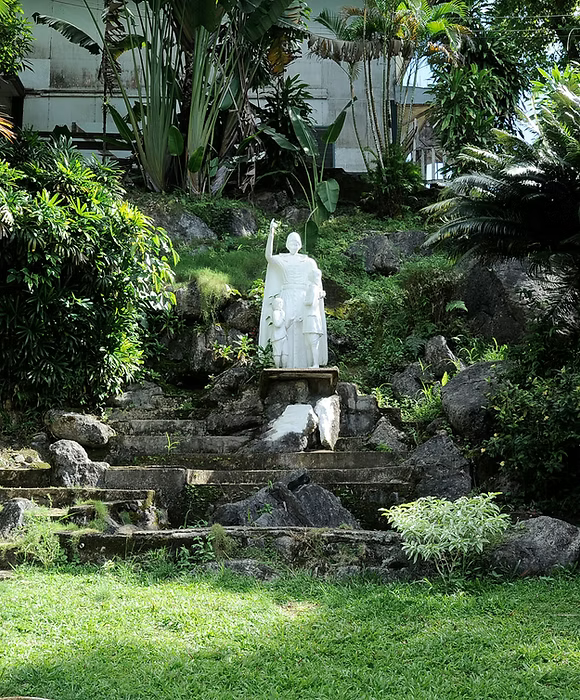

About De La Salle John Bosco College
Learn about our history, mission, vision, and our commitment to providing quality Lasallian education for more than six decades.

Learn about our history, mission, vision, and our commitment to providing quality Lasallian education for more than six decades.
Building future leaders through faith, excellence, and service for over six decades.

The De La Salle John Bosco College (DLSJBC) is a PAASCU-accredited Lasallian District School located in Mangagoy, Bislig City, Surigao del Sur, Philippines.
Established in 1963 by the Don Bosco Fathers, the administration and supervision of the institution was formally transferred to the De La Salle Brothers in 1977.
DLSJBC offers complete Preschool, Basic Education, Senior High School, College, and TESDA-accredited TVET programs dedicated to forming competent, compassionate, and socially responsible graduates.
 OUR HERITAGE
OUR HERITAGE
More than six decades of shaping lives through Lasallian education.
Bislig Bay Elementary School was established for the dependents of the Bislig Bay Lumber Company, laying the foundation of today's DLSJBC.
The Salesian Fathers of Don Bosco officially established St. John Bosco Technical High School to provide technical education and Christian formation.
Administration of the institution was formally entrusted to the De La Salle Brothers, beginning its Lasallian tradition.
John Bosco School expanded into higher education and officially became John Bosco College.
The institution officially became De La Salle John Bosco College after joining De La Salle Philippines as its 18th District School.
DLSJBC traces its roots to the Bislig Bay Elementary School established during the 1950s for the children of employees of the Bislig Bay Lumber Company. In 1961, Fr. Alberto Grol transformed the school into a parochial institution that welcomed students beyond company dependents, making Catholic education accessible to the wider community.
During 1962–1963, the vision for a boys' technical school became a reality through the support of Don Andres Soriano and the Salesian Fathers of Don Bosco. This led to the establishment of St. John Bosco Technical High School, which focused on developing young men with strong technical skills, Christian values, and leadership qualities.
As the school continued to grow, it became a co-educational institution and eventually transferred to its present campus along La Salle Drive in Barangay Mangagoy. In 1977, the administration was officially entrusted to the De La Salle Brothers, ushering in a new era of Lasallian education rooted in faith, service, and academic excellence.
The institution continued expanding throughout the following decades. In 1999, it opened its College Department and became John Bosco College. In 2007, after officially joining De La Salle Philippines, the school adopted its present name, De La Salle John Bosco College, becoming the 18th District School under the Lasallian network.
Today, DLSJBC remains committed to providing quality Catholic education from Preschool to College, while also offering TESDA-accredited TVET programs. Guided by the Lasallian mission, the institution continues to form competent professionals, servant leaders, and responsible citizens dedicated to building a better society.